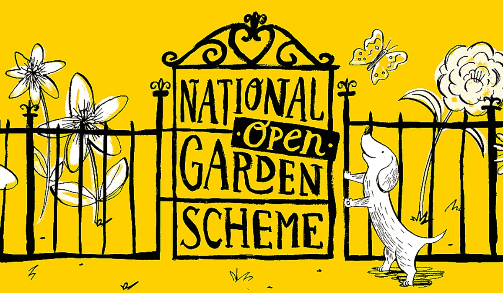

Our most popular Walks

Japanese Garden Walks
Find peace of mind while enjoying the beauty of a Japanese garden.
Japanese garden are designed to be contemplative spaces that allow you to escape from the
outside world and to connect with nature. They are often associated with Zen Buddhism and reflect its principles of
simplicity and mindfulness.
In addition to their aesthetic value, Japanese gardens are also created with specific principles in mind, such as
asymmetry, borrowed scenery, and the use of negative space. These principles aim to create a sense of tranquility and
harmony within the garden.
Japanese gardens are admired and appreciated for their beauty, serenity, and ability to transport visitors to a place of
peace and tranquility.
Book your zen experience with us.
Find peace of mind while enjoying the beauty of a Japanese garden.
Japanese garden are designed to be contemplative spaces that allow you to escape from the outside world and to connect with nature. They are often associated with Zen Buddhism and reflect its principles of simplicity and mindfulness. In addition to their aesthetic value, Japanese gardens are also created with specific principles in mind, such as asymmetry, borrowed scenery, and the use of negative space. These principles aim to create a sense of tranquility and harmony within the garden.Japanese gardens are admired and appreciated for their beauty, serenity, and ability to transport visitors to a place of peace and tranquility.
Book your zen experience with us.

French Garden Walks
Travel back in time and let the jardin à la française make you feel you are at a garden party with Louis XIV in 17th
century France.
French gardens are known for their formal and symmetrical layouts, geometric shapes, and meticulously
manicured hedges, lawns, and flower beds.
French gardens are often designed as a series of terraces or parterres, with grand axial pathways leading to focal
points such as statues, fountains, or pavilions. The layout of the gardens is carefully planned to create a sense of
balance and harmony.
Water is an important feature in shape of fountains, pools, and canals, which serve
both decorative and practical purposes.
French gardens look exclusive and luxurious. Join us for an .
Book your unforgettable walk and dive into the flamboyant world of King Louis XIV.

Wild Flower Walks
Join us on a walk into wild nature and learn about the various types of wild flowers.
Wild flowers can be found in fields, meadows, forests, mountains, and even along roadsides. Wild flowers come in a wide
variety of colors, shapes, and sizes. They can include daisies, sunflowers, poppies, lupines, violets, and many more.
Some wild flowers bloom for only a short period of time, while others can be seen throughout the year. They provide food
and shelter for various insects, birds, and other wildlife, making them an important part of the ecosystem.
Let the beauty of wild flowers inspire you.
Join us and explore magnificent wildlife

The National Garden Scheme
Get inspired and visit private or community gardens all over the United Kingdom.
Go on the website of our partner The National Garden Scheme and connect to your local community
Not in the UK? We are happy to connect you with your local gardeners.
Travel back in time and let the jardin à la française make you feel you are at a garden party with Louis XIV in 17th century France.
French gardens are known for their formal and symmetrical layouts, geometric shapes, and meticulously manicured hedges, lawns, and flower beds. French gardens are often designed as a series of terraces or parterres, with grand axial pathways leading to focal points such as statues, fountains, or pavilions. The layout of the gardens is carefully planned to create a sense of balance and harmony. Water is an important feature in shape of fountains, pools, and canals, which serve both decorative and practical purposes.French gardens look exclusive and luxurious. Join us for an .
Book your unforgettable walk and dive into the flamboyant world of King Louis XIV.
Wild Flower Walks
Join us on a walk into wild nature and learn about the various types of wild flowers.
Wild flowers can be found in fields, meadows, forests, mountains, and even along roadsides. Wild flowers come in a wide
variety of colors, shapes, and sizes. They can include daisies, sunflowers, poppies, lupines, violets, and many more.
Some wild flowers bloom for only a short period of time, while others can be seen throughout the year. They provide food
and shelter for various insects, birds, and other wildlife, making them an important part of the ecosystem.
Let the beauty of wild flowers inspire you.
Join us and explore magnificent wildlife
Join us on a walk into wild nature and learn about the various types of wild flowers.
Wild flowers can be found in fields, meadows, forests, mountains, and even along roadsides. Wild flowers come in a wide variety of colors, shapes, and sizes. They can include daisies, sunflowers, poppies, lupines, violets, and many more. Some wild flowers bloom for only a short period of time, while others can be seen throughout the year. They provide food and shelter for various insects, birds, and other wildlife, making them an important part of the ecosystem.Let the beauty of wild flowers inspire you.
Join us and explore magnificent wildlife
The National Garden Scheme
Get inspired and visit private or community gardens all over the United Kingdom.
Go on the website of our partner The National Garden Scheme and connect to your local community
Not in the UK? We are happy to connect you with your local gardeners.
Go on the website of our partner The National Garden Scheme and connect to your local community
Not in the UK? We are happy to connect you with your local gardeners.